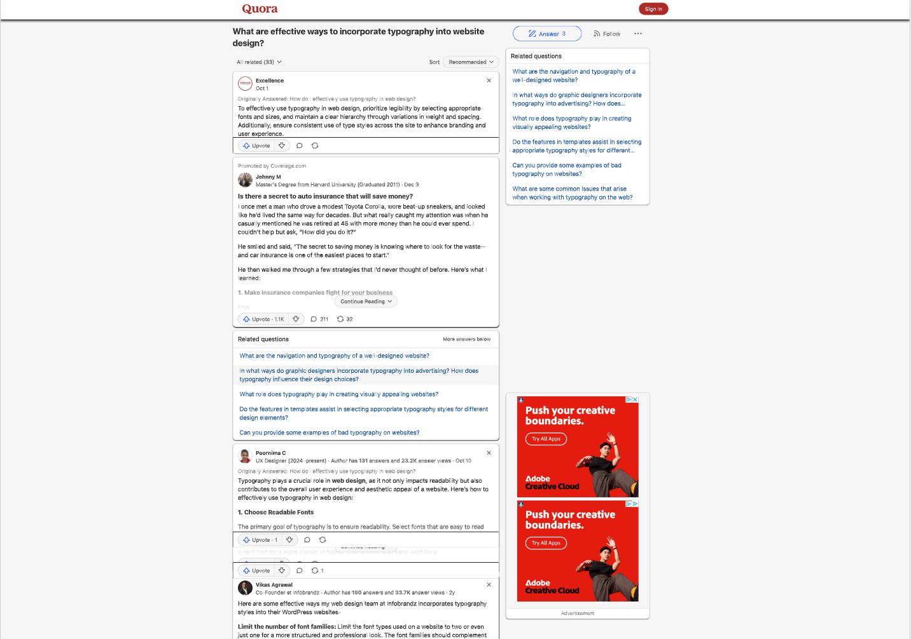
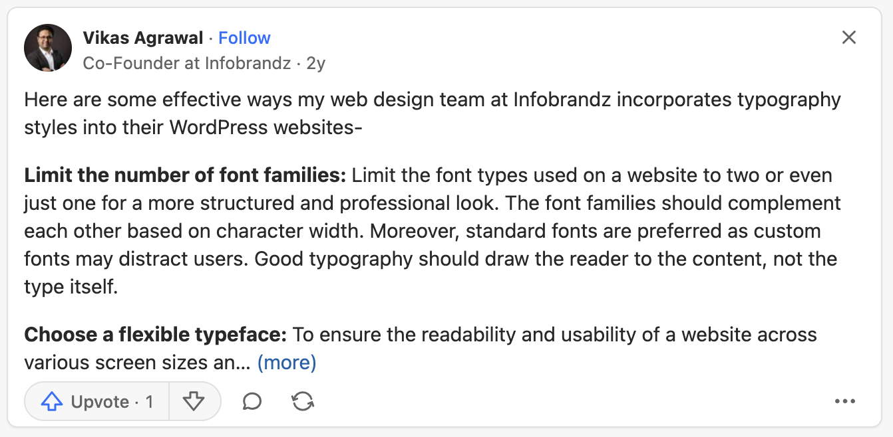
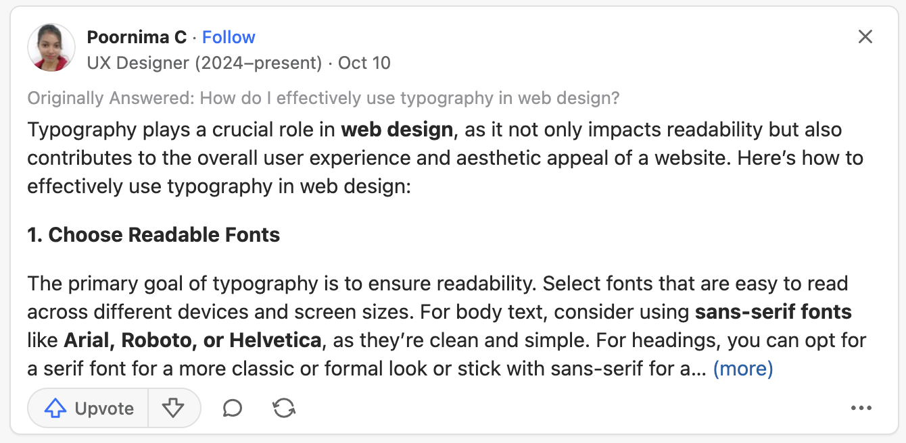
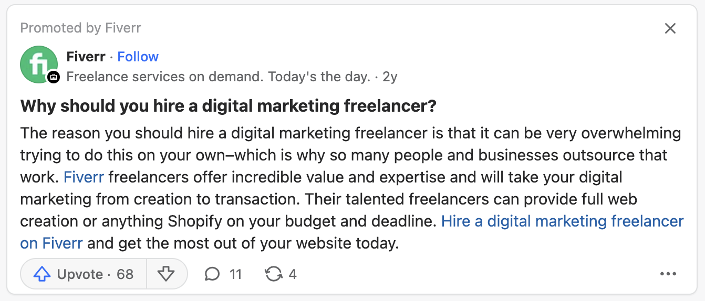
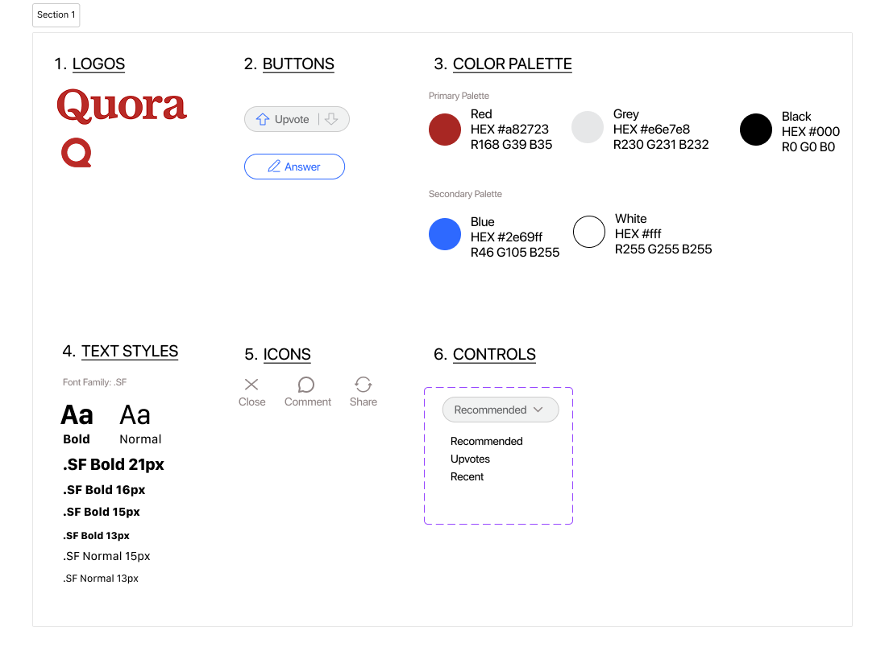
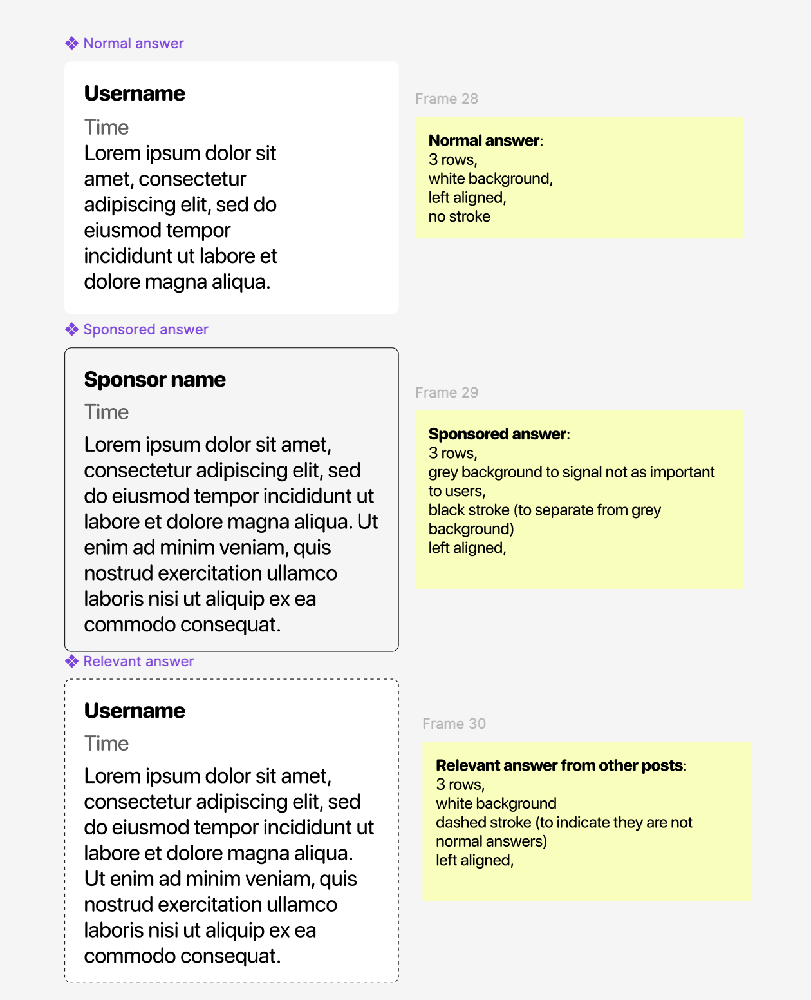
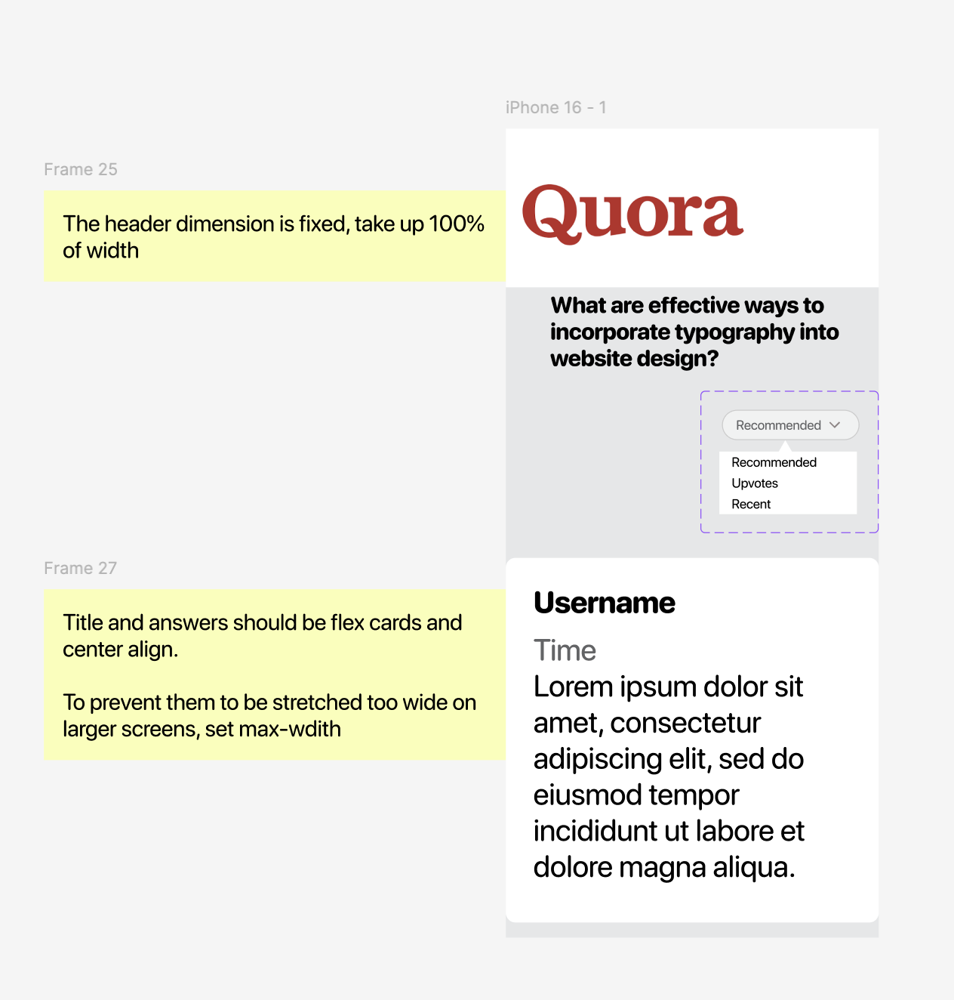
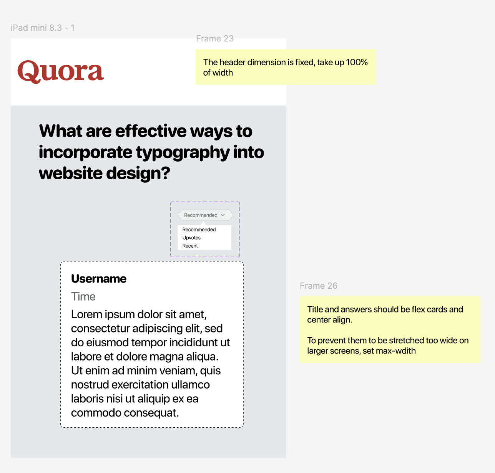
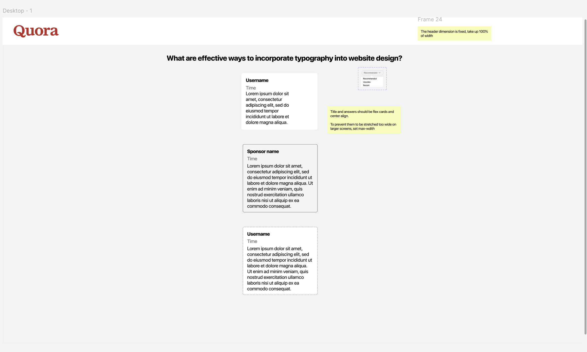

Overview
This assignment focuses on analyzing an existing webpage, identifying usability and accessibility issues, creating high-fidelity mockups for various screen sizes, and building a responsive webpage based on my prototypes.
Part 1: Identifying Usability Problems
Quora
I choose Quora, a popular question-and-answer website, for this assignment. Specifically, I am focusing on this page: What are effective ways to incorporate typography into website design?. I chose this page because I have always found the display of answers on Quora confusing where I cannot tell the difference between the (1) answers to the current question, (2) answers to relevant questions, and (3) promoted ads and often left frustrated.
Example of answer to the current question ⬇️
Example of answer to a relevant question ⬇️
Example of promoted ads ⬇️
Finding Problems
-
Analyze Efficiency, Learnability, and Memorability:
- Poor efficiency even for people who are familiar with the type distinctions: mixed content and unclear visual cues slows users from quickly discerning main answers, related answers, and ads.
- Poor learnability: Lacks clear cues to tell different types of responses, resulting in a steep learning curve for new users to distinguish different types of responses.
- Poor memorability for returned users: inconsistent hierarchy makes it difficult for returning users to recall where specific information is located. Also, the ordering of the contents seem dynamic, so a top relevant response may not even be at the top the next time the user visits the same page.
-
Evaluate the Conceptual Model of the Interface:
- The layout of all the answers lacks clear segmentation between primary answers, related content, and ads.
- This ambiguity makes it difficult for users to form an effective mental model of the page as to what to focus on.
-
Accessibility Issues (WebAIM WAVE):
- It has 20 images that are missing alt text. I think the lack of alternative text is less severe than these issues usually are because the ones lacking alt text are user profile pictures, which are not essential to the content. However, it is still important to provide alt text for all images to ensure that all users can access the content.
- I think it may be an intential design dark pattern to make the sponsored content less noticeable, but it is still important to make sure that all users can easily identify sponsored content. Failure to do so can lead to users clicking on sponsored content without realizing it, which can be frustrating and misleading.
Part 2: Visual Redesign
Visual Design Style Guide
Mockups
Create three annotated mockups (mobile, tablet, desktop). Describe layout choices (e.g., flexbox/grid usage, spacing, responsive adjustments) so a developer can implement your design with minimal additional explanation.
Mock design logic
The goal is to provide a lightweight version of Quora where users can focus on consuming the answers instead of being distracted by unrelated content. Therefore, centering the answers and removing the left and right columns will help users focus on the content, drawing analogy from traditional book reading experiences.
The biggest design requirement is to create distinct signifier for three types of answers: normal answer, sponsored answer, and related answer that comes from a relevant question. At the same time, I understand that Quora wants to inject sponsored answer in a subtle way to not annoy users yet attract their attention. Therefore, I made the background color of sponsored answers the same as the background color of the page, but with a border to make it stand out so once users learned this distinction, they can quickly skim through them if they want to skip sponsored answers.
I also want to make sure that the design is responsive and can adapt to different screen sizes. I want the answer to have a fixed max-width so that the text does not become too wide and hard to read on larger screens. As a result, naturally, when it's on a smaller screen, the answer will take up the full width of the screen while there will be more margin on larger screens.
At the same time, to prevent the Quora logo from being stretched too much or too small, I put it in the corner of the navbar, which has a fixed height. The idea is that the nav bar elements will be legible at all times while the width of nav bar should be flexible and responsive based on different screen sizes. The icons in the navbar from the original page are not included in the redesign because (1) they will be treated the same as the Quora logo so don't show additional understanding of this topic and (2) they are not essential to the problem which is the confusing layout of the answers.
Mock 1
Mock 2
Mock 3
Part 3: HiFi Redesign
Reiterate on the redesign logic.
The following is the high-fidelity redesign of the Quora page. Finished redesign. Original page.
The biggest design requirement is to create distinct signifier for three types of answers: normal answer, sponsored answer, and related answer that comes from a relevant question. At the same time, I understand that Quora wants to inject sponsored answer in a subtle way to not annoy users yet attract their attention. Therefore, I made the background color of sponsored answers the same as the background color of the page, but with a border to make it stand out so once users learned this distinction, they can quickly skim through them if they want to skip sponsored answers.
I also want to make sure that the design is responsive and can adapt to different screen sizes. I want the answer to have a fixed max-width so that the text does not become too wide and hard to read on larger screens. As a result, naturally, when it's on a smaller screen, the answer will take up the full width of the screen while there will be more margin on larger screens.
At the same time, to prevent the Quora logo from being stretched too much or too small, I put it in the corner of the navbar, which has a fixed height. The idea is that the nav bar elements will be legible at all times while the width of nav bar should be flexible and responsive based on different screen sizes. The icons in the navbar from the original page are not included in the redesign because (1) they will be treated the same as the Quora logo so don't show additional understanding of this topic and (2) they are not essential to the problem which is the confusing layout of the answers.
Additionally, I've added hovering effects/states to all texts and buttons. The dropdown is interactive as well.
Implementation notes
I've used Bootstrap 5 (MIT License) to create this interactive redesign.